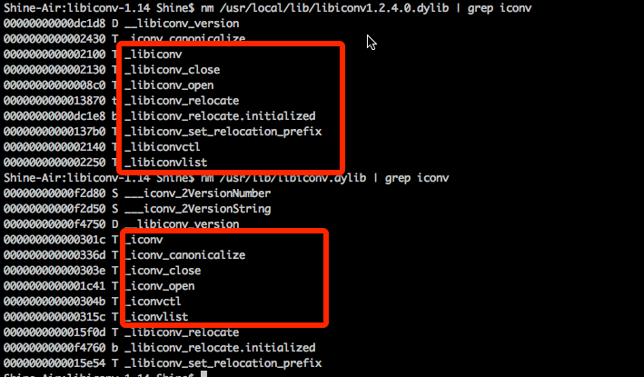
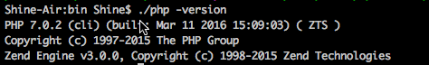
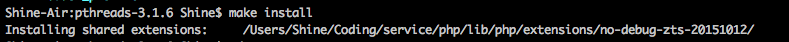
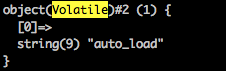
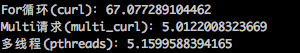
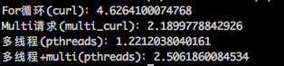

下载pthreads：http://pecl.php.net/package/pthreads
3.0以上必须要PHP7，暂时没安装7，所以，先下载了一个2.0.10。
出错：checking checking for ZTS... configure: error: pthreads requires ZTS, please re-compile PHP with ZTS enabled
问题，官网有解释：http://php.net/manual/zh/pthreads.requirements.php
需要在PHP编译阶段设置—enable-maintainer-zts属性
看来只能重新安装PHP7了。GG
编译PHP7：
下载：http://www.php.net/downloads.php
解压：tar zvxf php-7.0.4.tar.gz
tar zvxf php-7.0.4.tar.gz(./configure —prefix=/Users/Shine/Coding/service/php —enable-maintainer-its —with-iconv=/usr —enable-fpm —enable-sockets —enable-pcntl —enable-zip -with-pcre-regex —with-curl —with-config-file-path=/Users/Shine/Coding/service/php/etc && make && make test && make install)|tee -a ../install_php.back
安装问题：
期间报错：zlib目录无法找到，之前用brew安装过，直接指定路径了：—with-zlib-dir=/usr/local/zlib
期间报错：Configure: error: Please reinstall the BZip2 distribution 直接：brew install bzip2。--with-bz2-dir=/usr/local/Cellar/bzip2/1.0.6_1/
libiconv问题：
Undefined symbols for architecture x86_64:
"_libiconv", referenced from:
_do_convert in gdkanji.a
_zif_iconv_substr in iconv.o
_zif_iconv_mime in iconv.o
_php_iconv_strlen in iconv.o
_php_iconv_strpos in iconv.o
_php_iconv_appendl in iconv.o
...
"_libiconv_close", referenced from:
_do_convert in gdkanji.a
_zif_iconv_substr in iconv.o
_zif_iconv_mime in iconv.o
_php_iconv_strlen in iconv.o
_php_iconv_strpos in iconv.o
_php_iconv_appendl in iconv.o
...
"_libiconv_open", referenced from:
_do_convert in gdkanji.a
_zif_iconv_substr in iconv.o
_zif_iconv_mime in iconv.o
_php_iconv_strlen in iconv.o
_php_iconv_strpos in iconv.o
_php_iconv_mime_decode in iconv.o
...
id:symbol(s) not found for architecture x86_64
clang:error:linker command failed with exit code 1 (use -v to see invocation)
make: ***[sapi/cli/php] Error 1
symbol “libiconv"无法找到，找了很多地方都没有找到问题。最后看了http://superuser.com/questions/394219/compiling-php-on-os-x-iconv-works-only-if-forced-to-64-bit这篇链接，知道了原因是GCC编译的时候，优先扫描的/usr/local/目录下的库，而这个不是默认的库。
系统自带的iconv与后来安装的iconv在symbol的定义上存在区别。然后再看了http://superuser.com/questions/394219/compiling-php-on-os-x-iconv-works-only-if-forced-to-64-bit，找到方法。
就是将/usr/local/lib/libiconv下的库文件，屏蔽掉。
mv /usr/local/lib/libiconv.2.4.0.dylib /usr/local/lib/libiconv1.2.4.0.dylib
mv /usr/local/lib/libiconv.2.dylib /usr/local/lib/libiconv1.2.dylib
mv /usr/local/lib/libiconv.dylib /usr/local/lib/libiconv1.dylib
mv /usr/local/lib/libiconv.la /usr/local/lib/libiconv1.la
mv /usr/local/include/iconv.h /usr/local/include/iconv1.h（关键是这个）
然后再重新configure && make && make test && make install。
完成啦~@@！！

Pthreads安装：
下载pthread：http://pecl.php.net/package/pthreads
下载的最新的3.1.6：
tar zvxf pthreads-3.1.6.tar.gz
cd pthreads-3.1.6
sudo /User/Shine/Coding/service/php/bin/phpize
../configure —whith-php-config=/User/Shine/Coding/service/php/bin/php-config
make && make install

vi /User/Shine/Coding/service/php/etc/php.ini，添加 extension=pthreads.so
经过测试，正常！
Pthreads开发问题：
下面就是开始写代码啦！
pthread的github地址：https://github.com/krakjoe/pthreads
注意：pthreads中，线程调用无法不能使用数组！！！
错误：Uncaught RuntimeException: pthreads detected an attempt to connect to an object which has already been destroyed
原因：http://stackoverflow.com/questions/14796674/a-php-pthreads-thread-class-cant-use-array
可以使用一个提供的对象：Threaded（其也是线程安全的）
当然也可以强制使用：强制类型转换（array）
在线程之间切换的时候，array会被转换成Volatile类。

错误：class not found
原因：https://github.com/krakjoe/pthreads/issues/68
线程中的autoload需要重新指定autoload。
解决：在线程开始前，获取主线程中的autoload函数，然后子线程中，重新对这些函数进行spl_autoload_register即可解决。
应用：
faster_curl(异步非阻塞http请求模块)：https://github.com/Shineyel/faster_curl
测试：curl和multi curl和pthreads curl的区别

有时候，pthread多线程模式下，速度更快！

可见，使用多线程可以明显减少时间。